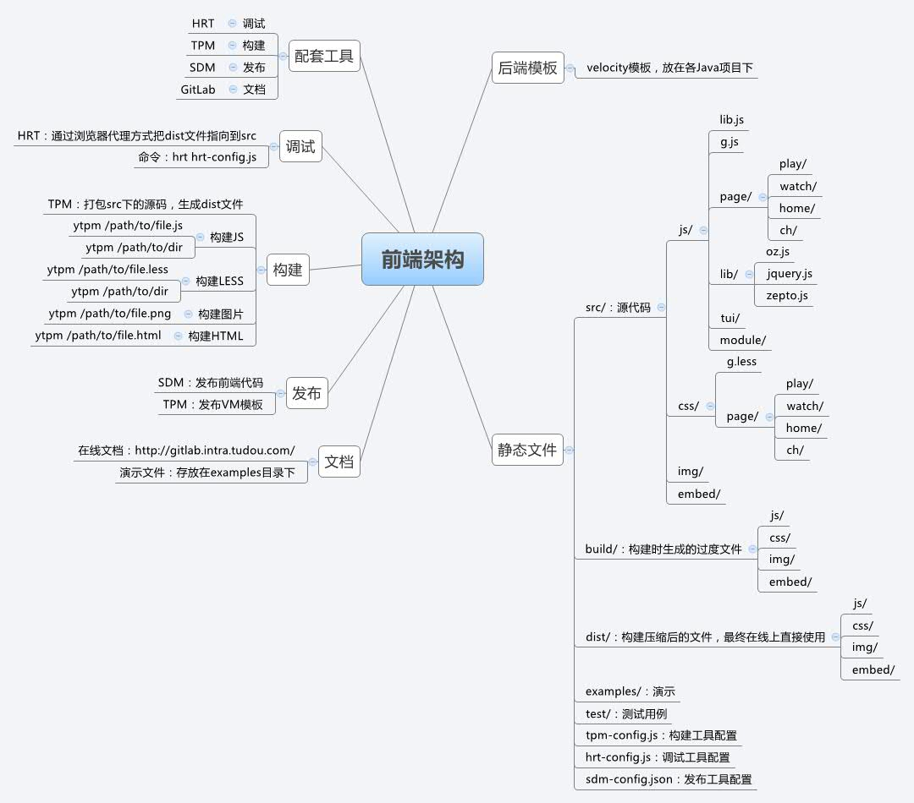

概要
- 架构图
- 代码结构
- 开发
- 调试
- 构建
- 发布
- 前端版本化
架构图
代码结构
基于第三方类库
- PC：基于jQuery
- 移动：基于Zepto
- 模块化：AMD标准，基于OzJS
- JS模板：artTemplate
- CSS：LESS
OZJS

Class Module
// src/js/tui/class.js define(function() { function extend(protoProps, staticProps) { } var Class = function(protoProps) { }; Class.extend = extend; return Class; });
Event Module
// src/js/tui/event.js define(['tui/class'], function(Class) { var Event = Class({ initialize : function() { }, bind : function() { }, unbind : function() { }, trigger : function() { } }); return Event; });
Dialog Module
// src/js/tui/dialog.js define([ 'tui/browser', 'tui/art', 'tui/mask', 'tui/widget', 'tui/drag' ], function(Browser, Art, Mask, Widget, Drag) { var Dialog = Widget.extend({ initialize : function(config) { }, open : function() { }, close : function() { } }); return Dialog; });
模块的加载启动
// src/js/page/play/main.js require([ 'g', 'module/login/login', './hylogin', './ugclogin', 'module/domain', 'module/global' ], function( G, login, HyLogin, UgcLogin, Domain, global ) { // 各种初始化 });
开发
开发流程
-
在分支上开发、调试，Git Network graph
git branch branchName -
测试阶段合并到 develop
git checkout develop git pull --rebase origin develop git merge --no-ff branchName
-
上线前合并到 master
git checkout master git pull --rebase origin master git merge --no-ff branchName
调试
配置调试环境
- 安装 hrt：npm install hrt -g
- 修改浏览器代理：IP：127.0.0.1，端口：2222，用SwitchySharp（Chrome插件）、FoxyProxy（Firefox插件）
- 启动调试服务：hrt hrt-config.js --port=2222
hrt-config.js
// URL跳转规则 exports.map = [ ['http://js.ykimg.com/v3/dist', localRoot + '/src'], ['http://css.ykimg.com/v3/dist', localRoot + '/src'], ['http://jstest.ykimg.com/v3/src', localRoot + '/src'], ['http://csstest.ykimg.com/v3/src', localRoot + '/src'], ]; // 修改URL exports.before = function(url) { return url.replace(/([^?]+)_\d+(\.(?:js|css))/, '$1$2'); }; // 修改文件内容 exports.merge = function(path, callback) { return readFileSync(path); };
调试窗口

构建
配置构建环境
- 安装 tpm：npm install tpm -g
- 打包JS：ytpm src/js/g.js
- 打包CSS：ytpm src/css/g.less
tpm-config.js
exports.main = { "js" : [ "lib.js", "g.js", "page/play/main.js", ], "css" : [ "g.less", "play/main.less", ], };
发布
Chips for Git

sdm-config.json
{ "project" : { "play" : { "title" : "播放页", "files" : [ "js/page/play/**/*", "css/play/**/*", "img/**/*", "embed/**/*" ] } } }
发布流程
- 对比master和线上版本
- 生成要发布的文件列表
- 测试环境直接发布，线上环境打包成zip文件
前端版本化
VM引入CSS/JS
CSS
<link href="$static.getURL('/youku/dist/css/g.css')" rel="stylesheet"/>
JS
<script src="$static.getURL('/youku/dist/js/g.js')"></script>
<script>$static.getContent('/youku/dist/js/g.js')</script>
HTML输出
CSS
<link href="http://css.ykimg.com/youku/dist/css/g_1.css" rel="stylesheet"/>
JS
<script src="http://js.ykimg.com/youku/dist/js/g_1.js"></script>
<script>/* JavaScript 代码 */</script>
版本化流程
- 上传前端文件（g.js）
- 生成新文件，上一个版本加1（g_1.js）
- 更新配置文件（version.properties、versionconfig.properties）
- 同步到各CDN服务器
- 后端抓取配置文件，更新URL
版本配置
http://commconf.hgh.tudou.com/staticconf/version.properties
/youku/dist/js/g.js=/v3/dist/js/g_1.js /youku/dist/css/g.css=/v3/dist/js/g_1.css ....
http://10.10.72.59:89/static_res/versions
reloadRate=60 autoReload=true autoReloadNavi=true staticServer=http://css.ykimg.com jsStaticServer=http://js.ykimg.com
有什么想问的
Q&A